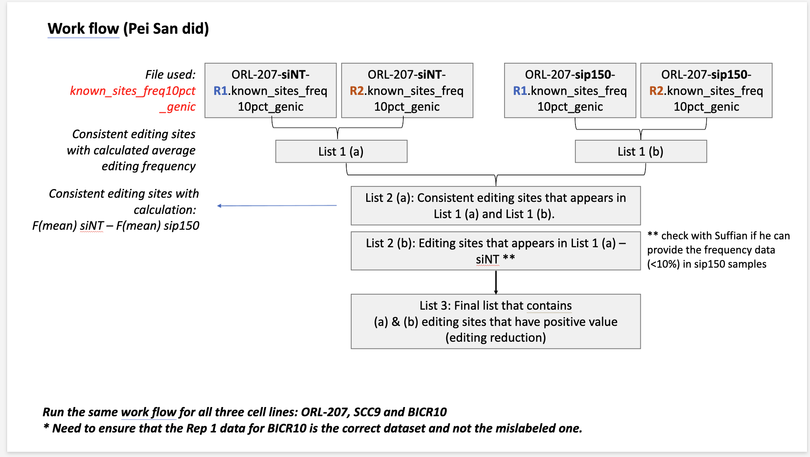
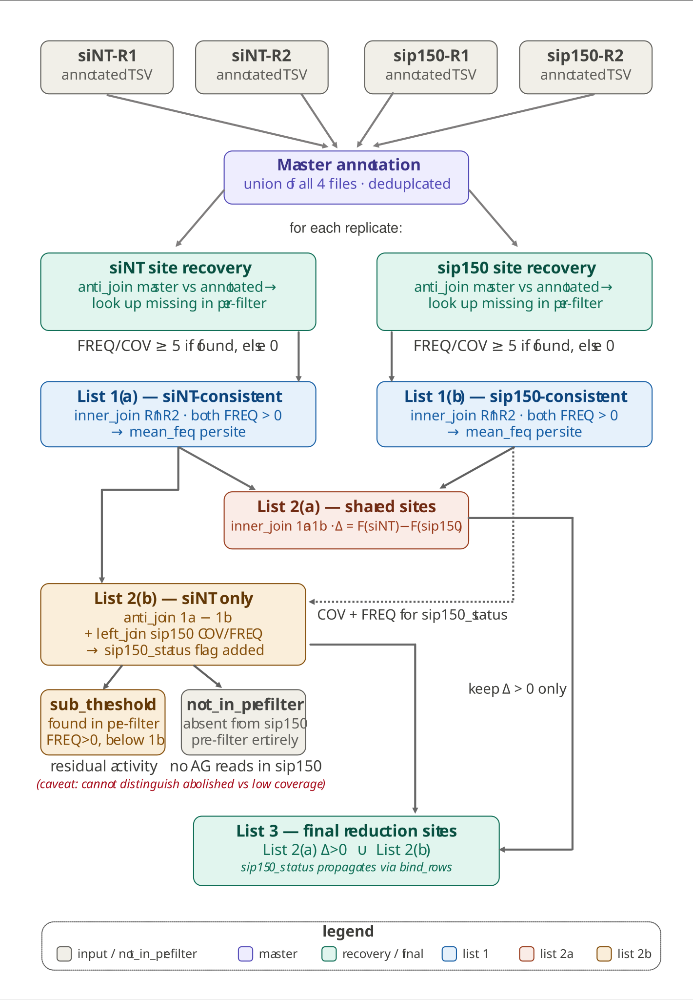
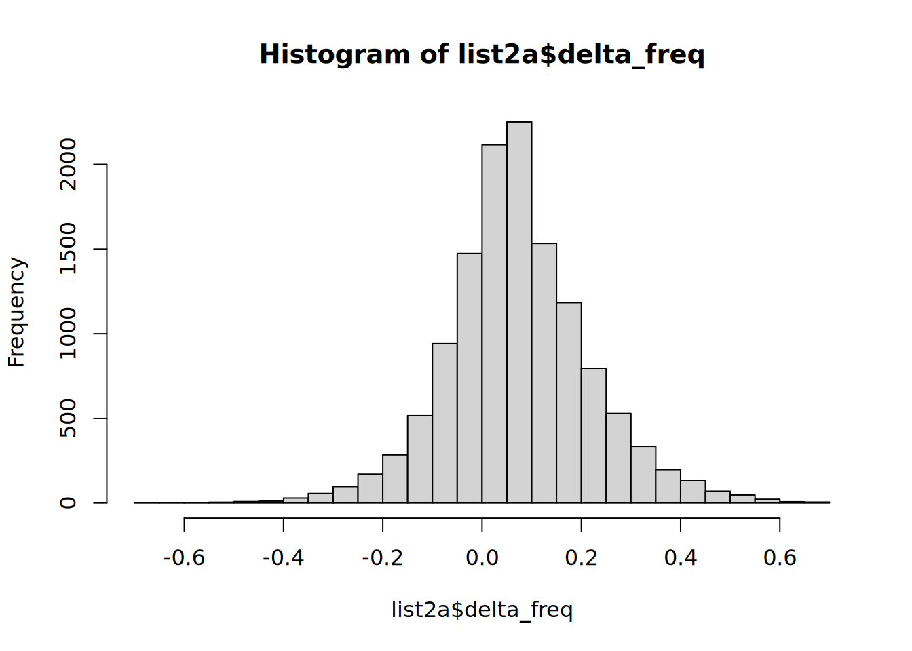

Code
library(tidyverse)
library(fs)This notebook processes per-sample, per-replicate RNA editing output from RediTools v1 and replicates the manual filtering workflow in a reproducible, scripted form.
The workflow for each cell line is designed based on this manual workflow from Pei San:

library(tidyverse)
library(fs)# Root directory containing all TSV files, organised by cell line.
# Expected structure:
# input-data/
# ORL-207/
# ORL-207-siNT-R1.known_sites_freq10pct_genic.tsv <- annotated (SnpEff)
# ORL-207-siNT-R1-knownEditing-labeled.tsv <- pre-filter (knownEditing)
# ... (same pattern for R2, sip150-R1, sip150-R2)
# SCC9/ ...
# BICR10/ ... (ensure R1 is the corrected, relabelled file)
DATA_DIR <- "input-data"
# Cell lines to process
CELL_LINES <- c("ORL-207", "SCC9", "BICR10")
# File suffix for the SnpEff-annotated, frequency-filtered files
ANNOTATED_SUFFIX <- "known_sites_freq10pct_genic.tsv"
# File suffix for the pre-filter files (AG-only, no frequency cutoff, no header)
PREFILTER_SUFFIX <- "knownEditing-labeled.tsv"
# Columns used to uniquely identify an editing site across files
SITE_KEYS <- c("CHROM", "POS")
# Column names for the headerless pre-filter file (RediTools AG-filtered output)
PREFILTER_COLS <- c(
"CHROM", "POS", "REF", "STRAND", "COV", "MeanQ",
"BaseCount", "AllSubs", "FREQ",
"gCOV", "gMeanQ", "gBaseCount", "gAllSubs", "gFREQ",
"REPTYPE", "REPNAME", "SNPFlag", "dbSNP_ID",
"REDIPortalFlag", "EDITSTATUS"
)# Read a SnpEff-annotated, frequency-filtered TSV and rename awkward ANN columns
read_annotated_tsv <- function(path) {
read_tsv(path, show_col_types = FALSE) |>
rename(
gene = `ANN[0].GENE`,
feature = `ANN[0].FEATUREID`,
effect = `ANN[0].EFFECT`,
impact = `ANN[0].IMPACT`,
biotype = `ANN[0].BIOTYPE`,
hgvs_c = `ANN[0].HGVS_C`
)
}
# Read a headerless pre-filter TSV (RediTools AG-only output, no frequency cutoff)
read_prefilter_tsv <- function(path) {
read_tsv(path, col_names = PREFILTER_COLS, show_col_types = FALSE)
}
# Build a file path given cell line, condition, replicate, and suffix
build_path <- function(cell_line, condition, replicate, suffix, sep = "-") {
path(DATA_DIR, cell_line,
paste0(cell_line, "-", condition, "-", replicate, sep, suffix))
}To recover sites that might have been “called” as AG edited sites but fell off during the hard frequency threshold filtering at the time of annotation, we would be executing the strategy visualized below to “recover” them from the replicate sample files (pre-filter files) across the two conditions (siNT & sip150).

# Build a master annotation table from all four annotated files for a cell line.
# Keeps the first-seen annotation for any site that appears in multiple files.
# This is purely the union of what already passed the upstream filter. It's the reference set that the recovery step later uses to ask "what did this specific replicate miss?"
build_master_annotation <- function(cell_line) {
combos <- expand_grid(
condition = c("siNT", "sip150"),
replicate = c("R1", "R2")
)
map2(combos$condition, combos$replicate, function(cond, rep) {
p <- build_path(cell_line, cond, rep, ANNOTATED_SUFFIX, sep = ".")
if (file_exists(p)) read_annotated_tsv(p) else NULL
}) |>
compact() |>
bind_rows() |>
distinct(CHROM, POS, .keep_all = TRUE)
}
# For one replicate: recover sites in the master annotation set that were dropped by the upstream frequency filter.
# Returns the annotated dataframe with dropped sites re-attached (FREQ and COV from the pre-filter file, or 0 if truly absent).
# A `recovered` column flags which rows were added this way.
recover_replicate <- function(annotated_df, prefilter_path, master_annot) {
# Sites in the master that are absent from this replicate's annotated file
missing <- anti_join(master_annot, annotated_df, by = SITE_KEYS)
if (nrow(missing) == 0) {
return(mutate(annotated_df, recovered = FALSE))
}
# Pull FREQ and COV for missing sites from the pre-filter file
prefilter <- read_prefilter_tsv(prefilter_path) |>
select(CHROM, POS, FREQ, COV)
recovered_rows <- missing |>
# Keep annotation columns only (FREQ/COV will come from pre-filter)
select(CHROM, POS, REF, ALT, STRAND,
gene, feature, effect, impact, biotype, hgvs_c,
REPTYPE, REPNAME, EDITSTATUS) |>
left_join(prefilter, by = SITE_KEYS) |>
mutate(
FREQ = replace_na(FREQ, 0), # 0 = truly absent in this replicate
COV = replace_na(COV, 0),
recovered = TRUE
)
bind_rows(
mutate(annotated_df, recovered = FALSE),
recovered_rows
)
}
# Load and recover sites based on one replicate pre-filter and tailor master dataframe: wrapper that calls both readers and recover_replicate
load_and_recover_replicate_to_master_df <- function(cell_line, condition, replicate, master_annot) {
ann_path <- build_path(cell_line, condition, replicate, ANNOTATED_SUFFIX, sep = ".")
pre_path <- build_path(cell_line, condition, replicate, PREFILTER_SUFFIX, sep = "-")
annotated <- read_annotated_tsv(ann_path)
recover_replicate(annotated, pre_path, master_annot)
}# List 1: intersect two replicates for one condition.
# "Consistent" = site has FREQ > 0 in BOTH replicates after recovery.
# Returns per-site mean FREQ with individual replicate FREQs retained.
make_list1 <- function(r1_df, r2_df, condition_label) {
inner_join(
r1_df |> select(all_of(SITE_KEYS), gene, effect, impact, biotype,
REPTYPE, REPNAME, EDITSTATUS, STRAND,
freq_R1 = FREQ, cov_R1 = COV, recovered_R1 = recovered),
r2_df |> select(all_of(SITE_KEYS),
freq_R2 = FREQ, cov_R2 = COV, recovered_R2 = recovered),
by = SITE_KEYS
) |>
filter(freq_R1 > 0, freq_R2 > 0) |> # both replicates must show evidence
mutate(
condition = condition_label,
mean_freq = (freq_R1 + freq_R2) / 2,
mean_cov = (cov_R1 + cov_R2) / 2,
any_recovered = recovered_R1 | recovered_R2
)
}
# List 2(a): sites consistent in BOTH conditions.
# Computes delta = F(mean)siNT - F(mean)sip150.
make_list2a <- function(list1a, list1b) {
inner_join(
list1a |> select(all_of(SITE_KEYS), gene, effect, impact, biotype,
REPTYPE, REPNAME, EDITSTATUS, STRAND,
mean_freq_siNT = mean_freq,
mean_cov_siNT = mean_cov,
freq_R1_siNT = freq_R1,
freq_R2_siNT = freq_R2,
recovered_siNT = any_recovered),
list1b |> select(all_of(SITE_KEYS),
mean_freq_sip150 = mean_freq,
mean_cov_sip150 = mean_cov,
freq_R1_sip150 = freq_R1,
freq_R2_sip150 = freq_R2,
recovered_sip150 = any_recovered),
by = SITE_KEYS
) |>
mutate(
delta_freq = mean_freq_siNT - mean_freq_sip150,
list_origin = "2a_shared",
sip150_status = "present_consistent"
)
}
# List 2(b): sites in siNT only (absent from sip150 consistent list).
make_list2b <- function(list1a, list1b, sip150_r1, sip150_r2) {
sip150_cov <- bind_rows(
sip150_r1 |> select(CHROM, POS, COV, FREQ),
sip150_r2 |> select(CHROM, POS, COV, FREQ)
) |>
group_by(CHROM, POS) |>
summarise(
mean_cov_sip150 = mean(COV, na.rm = TRUE),
mean_freq_sip150 = mean(FREQ, na.rm = TRUE),
.groups = "drop"
)
anti_join(list1a, list1b, by = SITE_KEYS) |>
left_join(sip150_cov, by = SITE_KEYS) |>
mutate(
delta_freq = mean_freq,
list_origin = "2b_siNT_only",
sip150_status = case_when(
is.na(mean_freq_sip150) | mean_freq_sip150 == 0 ~ "not_in_prefilter",
mean_freq_sip150 > 0 ~ "sub_threshold"
)
)
}
# List 3: editing-reduction sites.
# List 2(a) with positive delta + all List 2(b).
make_list3 <- function(list2a, list2b) {
bind_rows(
filter(list2a, delta_freq > 0),
list2b
) |>
arrange(desc(delta_freq))
}
# Master function: run the full workflow for one cell line
run_workflow <- function(cell_line) {
message("\n── Processing: ", cell_line, " ──")
# Build master annotation from all four annotated files
master <- build_master_annotation(cell_line)
message(" Master annotation set: ", nrow(master), " sites")
# Load and recover each replicate
siNT_R1 <- load_and_recover_replicate_to_master_df(cell_line, "siNT", "R1", master)
siNT_R2 <- load_and_recover_replicate_to_master_df(cell_line, "siNT", "R2", master)
sip150_R1 <- load_and_recover_replicate_to_master_df(cell_line, "sip150", "R1", master)
sip150_R2 <- load_and_recover_replicate_to_master_df(cell_line, "sip150", "R2", master)
message(" Recovered sites — siNT-R1: ", sum(siNT_R1$recovered),
" siNT-R2: ", sum(siNT_R2$recovered),
" sip150-R1: ", sum(sip150_R1$recovered),
" sip150-R2: ", sum(sip150_R2$recovered))
list1a <- make_list1(siNT_R1, siNT_R2, "siNT")
list1b <- make_list1(sip150_R1, sip150_R2, "sip150")
list2a <- make_list2a(list1a, list1b)
list2b <- make_list2b(list1a, list1b, sip150_R1, sip150_R2)
list3 <- make_list3(list2a, list2b)
list(
cell_line = cell_line,
list1a = list1a,
list1b = list1b,
list2a = list2a,
list2b = list2b,
list3 = list3
)
}# ── SCRATCH: sanity check with ORL-207 only ──────────────────────
# Step 1: read one annotated file directly and inspect
test_ann <- read_annotated_tsv(
build_path("ORL-207", "siNT", "R1", ANNOTATED_SUFFIX, sep = ".")
)
glimpse(test_ann)Rows: 68,573
Columns: 16
$ CHROM <chr> "chrX", "chrX", "chrX", "chrX", "chrX", "chrX", "chrX", "ch…
$ POS <dbl> 2792993, 2793061, 2803982, 2803988, 2811619, 2811713, 29061…
$ REF <chr> "A", "A", "A", "A", "A", "A", "T", "T", "T", "T", "T", "T",…
$ ALT <chr> "G", "G", "G", "G", "G", "G", "C", "C", "C", "C", "C", "C",…
$ gene <chr> "XG", "XG", "XG", "XG", "XG", "XG", "ARSD", "ARSD", "ARSD",…
$ feature <chr> "NM_001141919.1", "NM_001141919.1", "NM_001141919.1", "NM_0…
$ effect <chr> "intron_variant", "intron_variant", "intron_variant", "intr…
$ impact <chr> "MODIFIER", "MODIFIER", "MODIFIER", "MODIFIER", "MODIFIER",…
$ biotype <chr> "protein_coding", "protein_coding", "protein_coding", "prot…
$ hgvs_c <chr> "c.254-1542A>G", "c.254-1474A>G", "c.374-2719A>G", "c.374-2…
$ STRAND <dbl> 1, 1, 1, 1, 1, 1, 0, 0, 0, 0, 0, 0, 0, 0, 0, 0, 0, 0, 0, 0,…
$ FREQ <dbl> 0.27, 0.33, 0.20, 0.40, 0.14, 0.17, 0.18, 0.29, 0.59, 0.13,…
$ COV <dbl> 11, 12, 5, 5, 7, 6, 45, 48, 41, 52, 53, 54, 52, 53, 54, 47,…
$ REPTYPE <chr> "SINE", "SINE", "SINE", "SINE", "SINE", "SINE", "SINE", "SI…
$ REPNAME <chr> "AluJo", "AluJo", "AluSx", "AluSx", "AluSz", "AluSz", "AluJ…
$ EDITSTATUS <chr> "KNOWN_ALU", "KNOWN_ALU", "KNOWN_ALU", "KNOWN_ALU", "KNOWN_…head(test_ann)nrow(test_ann)[1] 68573# Step 2: read one pre-filter file directly and inspect
test_pre <- read_prefilter_tsv(
build_path("ORL-207", "siNT", "R1", PREFILTER_SUFFIX, sep = "-")
)
glimpse(test_pre)Rows: 118,968
Columns: 20
$ CHROM <chr> "chrY", "chrX", "chrX", "chrX", "chrX", "chrX", "chrX",…
$ POS <dbl> 18991592, 2792983, 2792993, 2793000, 2793061, 2803982, …
$ REF <chr> "A", "A", "A", "A", "A", "A", "A", "A", "A", "A", "A", …
$ STRAND <dbl> 0, 1, 1, 1, 1, 1, 1, 1, 1, 0, 0, 0, 0, 0, 0, 0, 0, 0, 0…
$ COV <dbl> 24, 11, 11, 11, 12, 5, 5, 7, 6, 35, 45, 48, 43, 42, 41,…
$ MeanQ <dbl> 50.38, 37.00, 40.36, 40.36, 43.17, 42.00, 44.40, 40.57,…
$ BaseCount <chr> "[22, 0, 2, 0]", "[10, 0, 1, 0]", "[8, 0, 3, 0]", "[10,…
$ AllSubs <chr> "AG", "AG", "AG", "AG", "AG", "AG", "AG", "AG", "AG", "…
$ FREQ <dbl> 0.08, 0.09, 0.27, 0.09, 0.33, 0.20, 0.40, 0.14, 0.17, 0…
$ gCOV <chr> "-", "7", "7", "6", "8", "5", "3", "8", "4", "5", "6", …
$ gMeanQ <chr> "-", "37.00", "37.00", "37.00", "37.00", "37.00", "37.0…
$ gBaseCount <chr> "-", "[7, 0, 0, 0]", "[7, 0, 0, 0]", "[6, 0, 0, 0]", "[…
$ gAllSubs <chr> "-", "-", "-", "-", "-", "-", "-", "-", "-", "-", "-", …
$ gFREQ <chr> "-", "0.00", "0.00", "0.00", "0.00", "0.00", "0.00", "0…
$ REPTYPE <chr> "SINE", "SINE", "SINE", "SINE", "SINE", "SINE", "SINE",…
$ REPNAME <chr> "AluSx1", "AluJo", "AluJo", "AluJo", "AluJo", "AluSx", …
$ SNPFlag <chr> "-", "-", "snp", "-", "-", "-", "-", "-", "-", "-", "-"…
$ dbSNP_ID <chr> "-", "-", "rs780403911", "-", "-", "-", "-", "-", "-", …
$ REDIPortalFlag <chr> "ed", "ed", "ed", "ed", "ed", "ed", "ed", "ed", "ed", "…
$ EDITSTATUS <chr> "KNOWN_ALU", "KNOWN_ALU", "KNOWN_ALU", "KNOWN_ALU", "KN…head(test_pre)# Step 3: build master annotation and inspect
master <- build_master_annotation("ORL-207")
nrow(master) # how many unique sites across all 4 files?[1] 140951glimpse(master)Rows: 140,951
Columns: 16
$ CHROM <chr> "chrX", "chrX", "chrX", "chrX", "chrX", "chrX", "chrX", "ch…
$ POS <dbl> 2792993, 2793061, 2803982, 2803988, 2811619, 2811713, 29061…
$ REF <chr> "A", "A", "A", "A", "A", "A", "T", "T", "T", "T", "T", "T",…
$ ALT <chr> "G", "G", "G", "G", "G", "G", "C", "C", "C", "C", "C", "C",…
$ gene <chr> "XG", "XG", "XG", "XG", "XG", "XG", "ARSD", "ARSD", "ARSD",…
$ feature <chr> "NM_001141919.1", "NM_001141919.1", "NM_001141919.1", "NM_0…
$ effect <chr> "intron_variant", "intron_variant", "intron_variant", "intr…
$ impact <chr> "MODIFIER", "MODIFIER", "MODIFIER", "MODIFIER", "MODIFIER",…
$ biotype <chr> "protein_coding", "protein_coding", "protein_coding", "prot…
$ hgvs_c <chr> "c.254-1542A>G", "c.254-1474A>G", "c.374-2719A>G", "c.374-2…
$ STRAND <dbl> 1, 1, 1, 1, 1, 1, 0, 0, 0, 0, 0, 0, 0, 0, 0, 0, 0, 0, 0, 0,…
$ FREQ <dbl> 0.27, 0.33, 0.20, 0.40, 0.14, 0.17, 0.18, 0.29, 0.59, 0.13,…
$ COV <dbl> 11, 12, 5, 5, 7, 6, 45, 48, 41, 52, 53, 54, 52, 53, 54, 47,…
$ REPTYPE <chr> "SINE", "SINE", "SINE", "SINE", "SINE", "SINE", "SINE", "SI…
$ REPNAME <chr> "AluJo", "AluJo", "AluSx", "AluSx", "AluSz", "AluSz", "AluJ…
$ EDITSTATUS <chr> "KNOWN_ALU", "KNOWN_ALU", "KNOWN_ALU", "KNOWN_ALU", "KNOWN_…# Step 4: load and recover ONE replicate -> anti-join master with rep+condition annotated file; anything missing in the annotated file but present in the master union file means either in this rep+cond its freq and cov are too low, or they are truly absent (or zero as third possibility)
siNT_R1 <- load_and_recover_replicate_to_master_df("ORL-207", "siNT", "R1", master)
nrow(siNT_R1)[1] 140951head(siNT_R1)count(siNT_R1, recovered) # how many rows were recovered vs primary?# do the recovered sites have plausible FREQ values, or are they mostly 0?
filter(siNT_R1, recovered == TRUE) |>
pull(FREQ) |>
summary() Min. 1st Qu. Median Mean 3rd Qu. Max.
0.000000 0.000000 0.000000 0.007217 0.000000 1.000000 # how many are truly 0 (absent from pre-filter entirely)?
filter(siNT_R1, recovered == TRUE) |>
count(FREQ == 0)# peek at recovered rows only — do FREQ values look plausible?
filter(siNT_R1, recovered == TRUE) |>
select(CHROM, POS, FREQ, COV) |>
head(20)# Step 5: make List 1a and 1b manually
siNT_R2 <- load_and_recover_replicate_to_master_df("ORL-207", "siNT", "R2", master)
sip150_R1 <- load_and_recover_replicate_to_master_df("ORL-207", "sip150", "R1", master)
sip150_R2 <- load_and_recover_replicate_to_master_df("ORL-207", "sip150", "R2", master)
list1a <- make_list1(siNT_R1, siNT_R2, "siNT")
nrow(list1a)[1] 26497summary(list1a$mean_freq) Min. 1st Qu. Median Mean 3rd Qu. Max.
0.0150 0.1500 0.2500 0.3088 0.4150 1.0000 list1b <- make_list1(sip150_R1, sip150_R2, "sip150")
nrow(list1b)[1] 21173# Step 6: List 2a
list2a <- make_list2a(list1a, list1b)
nrow(list2a)[1] 12816summary(list2a$delta_freq) Min. 1st Qu. Median Mean 3rd Qu. Max.
-0.68000 -0.01000 0.06500 0.07519 0.15500 0.69000 hist(list2a$delta_freq, breaks = 40)
# Step 7: List 2b — updated signature
list2b <- make_list2b(list1a, list1b, sip150_R1, sip150_R2)
nrow(list2b)[1] 13681count(list2b, sip150_status)# expect only two levels: sub_threshold and not_in_prefilter
# abolished is structurally impossible given pre-filter is AG-only with COV >= 5
# Step 8: List 3
list3 <- make_list3(list2a, list2b)
nrow(list3)[1] 22928count(list3, list_origin)count(list3, sip150_status) # check the flag propagated correctly into list 3# rds_path <- "output/reddisco/results.rds"
# if (file_exists(rds_path)) {
# message("Loading results from cache: ", rds_path)
# results <- readRDS(rds_path)
# } else {
# results <- set_names(map(CELL_LINES, run_workflow), CELL_LINES)
# saveRDS(results, rds_path)
# }# map_dfr(results, function(r) {
# tibble(
# cell_line = r$cell_line,
# n_siNT_consistent = nrow(r$list1a),
# n_sip150_consistent = nrow(r$list1b),
# n_list2a_shared = nrow(r$list2a),
# n_list2b_siNT_only = nrow(r$list2b),
# n_list3_final = nrow(r$list3),
# # How many final sites contain at least one recovered replicate value
# n_list3_any_recovered = sum(r$list3$any_recovered, na.rm = TRUE)
# )
# })# # sip150_status:
# # sub_threshold = AG editing present in sip150 pre-filter but below consistency threshold
# # not_in_prefilter = no AG substitution reads meeting coverage threshold in sip150
# map_dfr(results, function(r) {
# r$list2b |>
# count(sip150_status) |>
# mutate(cell_line = r$cell_line)
# }) |>
# pivot_wider(names_from = sip150_status, values_from = n, values_fill = 0)# map_dfr(results, function(r) {
# r$list2a |> mutate(cell_line = r$cell_line)
# }) |>
# ggplot(aes(x = delta_freq, fill = cell_line)) +
# geom_histogram(binwidth = 0.02, colour = "white", alpha = 0.85) +
# geom_vline(xintercept = 0, linetype = "dashed", colour = "grey30") +
# facet_wrap(~ cell_line, scales = "free_y") +
# scale_x_continuous(labels = scales::percent) +
# labs(
# title = "Distribution of editing frequency change (siNT − sip150)",
# subtitle = "Positive = editing reduced in sip150; negative = editing increased",
# x = "Δ editing frequency", y = "Number of sites"
# ) +
# theme_bw() +
# theme(legend.position = "none")Recovered sites (where at least one replicate value came from the pre-filter file) are shown with a different shape so they can be assessed separately.
# map_dfr(results, function(r) {
# r$list2a |> mutate(cell_line = r$cell_line)
# }) |>
# ggplot(aes(x = mean_freq_siNT, y = mean_freq_sip150,
# colour = delta_freq > 0,
# shape = recovered_siNT | recovered_sip150)) +
# geom_point(alpha = 0.6, size = 1.5) +
# geom_abline(slope = 1, intercept = 0,
# linetype = "dashed", colour = "grey40") +
# facet_wrap(~ cell_line) +
# scale_x_continuous(labels = scales::percent) +
# scale_y_continuous(labels = scales::percent) +
# scale_colour_manual(
# values = c("TRUE" = "#e05c5c", "FALSE" = "#5c8de0"),
# labels = c("TRUE" = "Reduced", "FALSE" = "Not reduced")
# ) +
# scale_shape_manual(
# values = c("TRUE" = 2, "FALSE" = 16),
# labels = c("TRUE" = "Recovered", "FALSE" = "Primary call")
# ) +
# labs(
# title = "Mean editing frequency: siNT vs sip150",
# x = "F(mean) siNT",
# y = "F(mean) sip150",
# colour = "Editing reduced",
# shape = "Data origin"
# ) +
# theme_bw()# map_dfr(results, function(r) {
# r$list3 |> mutate(cell_line = r$cell_line)
# }) |>
# mutate(REPTYPE = replace_na(REPTYPE, "Non-repetitive")) |>
# count(cell_line, REPTYPE) |>
# ggplot(aes(x = cell_line, y = n, fill = REPTYPE)) +
# geom_col(position = "fill") +
# scale_y_continuous(labels = scales::percent) +
# labs(
# title = "Repeat type composition of final editing-reduction sites",
# x = NULL, y = "Proportion", fill = "Repeat type"
# ) +
# theme_bw()# out_dir <- "output/reddisco"
# dir_create(out_dir)
#
# walk(results, function(r) {
# cl <- r$cell_line
# write_tsv(r$list1a, path(out_dir, paste0(cl, "_list1a_siNT_consistent.tsv")))
# write_tsv(r$list1b, path(out_dir, paste0(cl, "_list1b_sip150_consistent.tsv")))
# write_tsv(r$list2a, path(out_dir, paste0(cl, "_list2a_shared.tsv")))
# write_tsv(r$list2b, path(out_dir, paste0(cl, "_list2b_siNT_only.tsv")))
# write_tsv(r$list3, path(out_dir, paste0(cl, "_list3_final_reduction.tsv")))
# message("Exported: ", cl)
# })